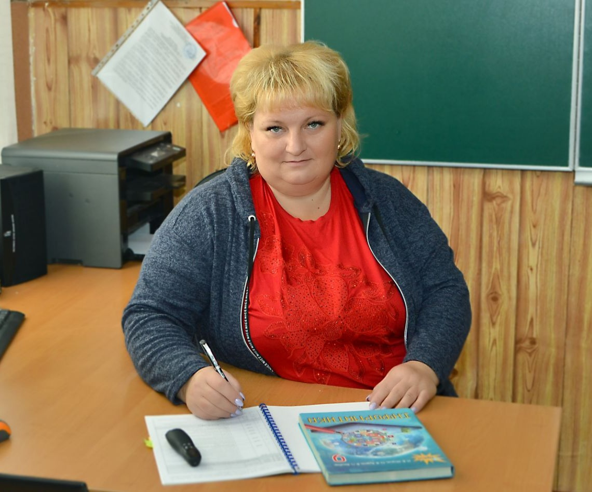
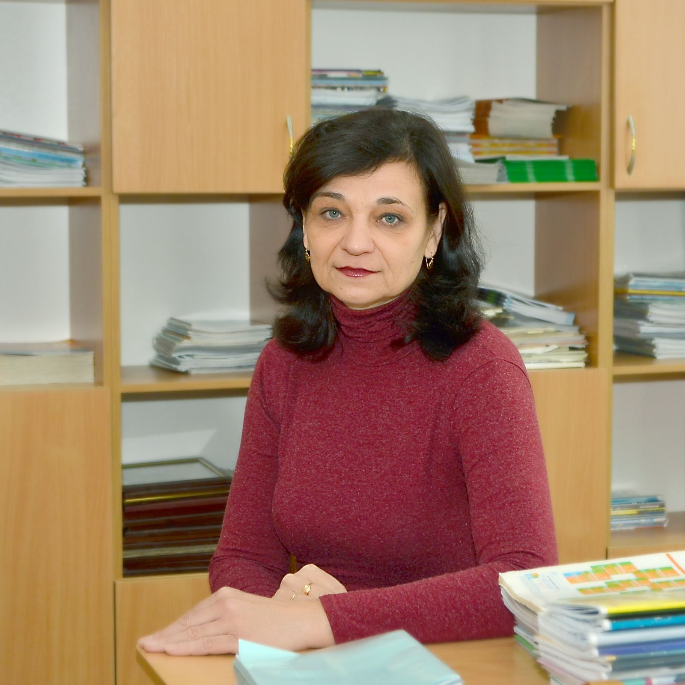
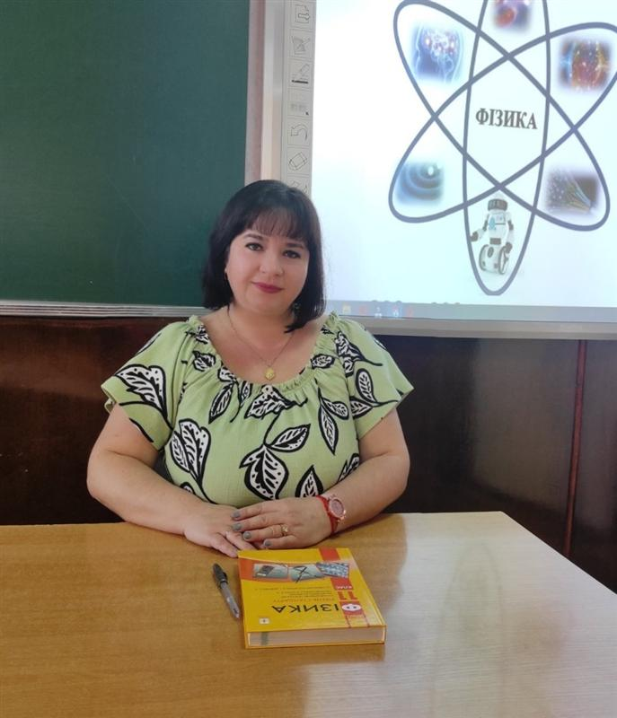

Професійна спільнота вчителів природничо-математичних наук
Баран Людмила В’ячеславівна
Вчитель географії та курсу "Пізнаємо природу"
Спеціаліст І категорії
Стаж роботи: 9 років
Ващенко Олександра Григорівна
Вчитель хімії та географії
Спеціаліст вищої категорії
Стаж роботи: 18 років

Грицай Тетяна Анатоліївна
Вчитель інформатики та СШП
Спеціаліст вищої категорії
Учитель-методист
Стаж роботи: 20 років

Лябах Наталія Василівна
Вчитель математики
Спеціаліст вищої категорії
Старший учитель
Стаж роботи: 37 років

Шип Світлана Миколаївна
Вчитель фізики та математики
Спеціаліст вищої категорії
Старший учитель
Стаж роботи: 21 рік